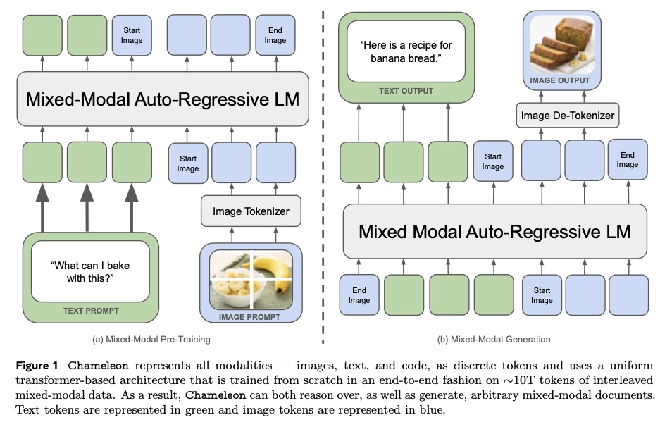
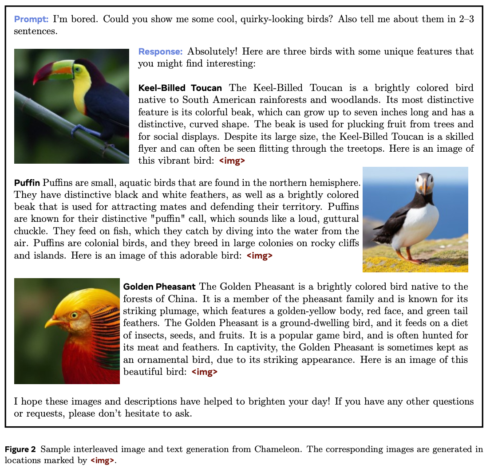
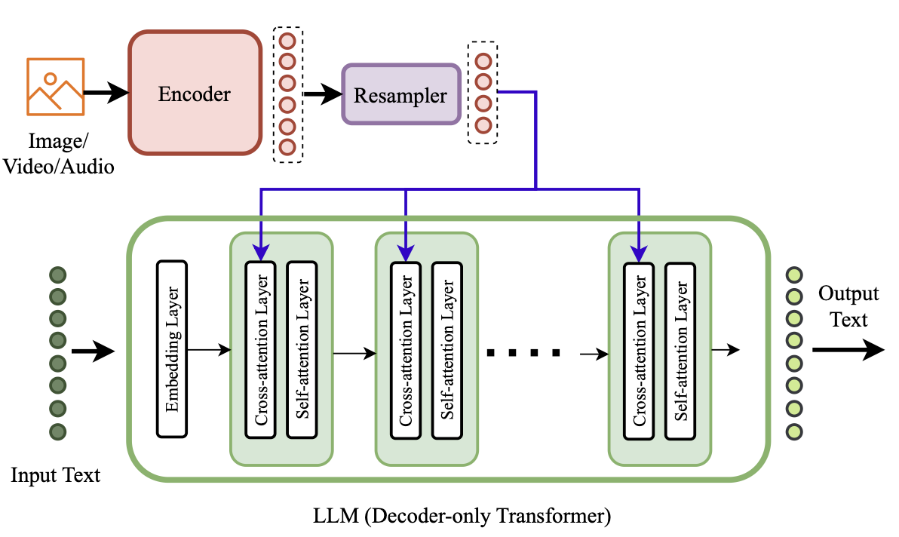
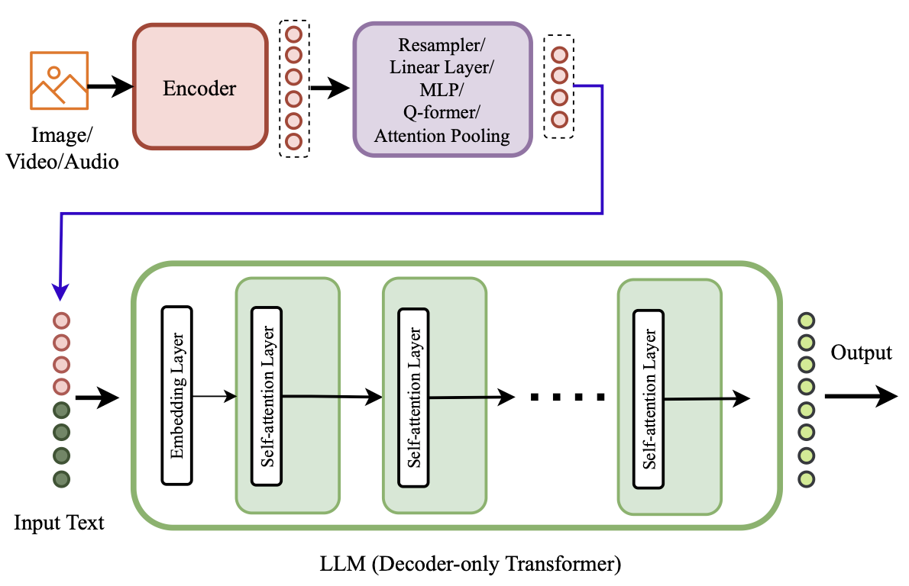
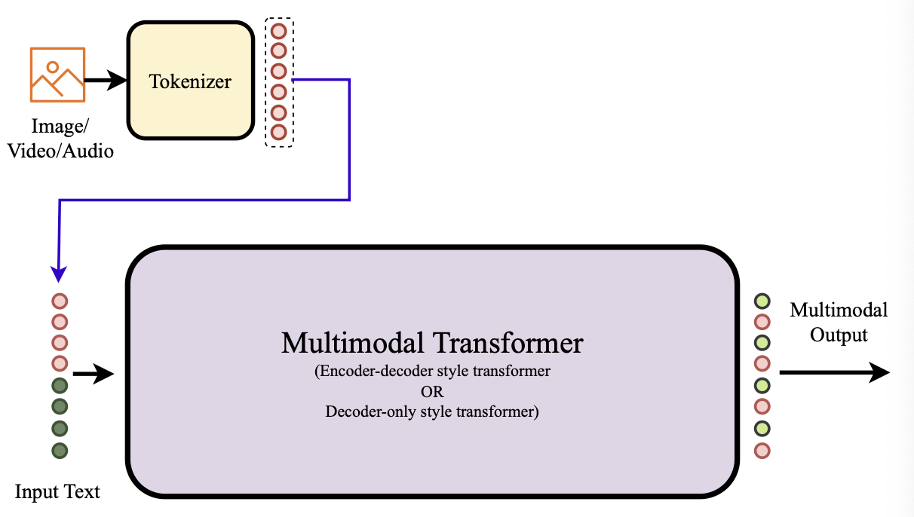
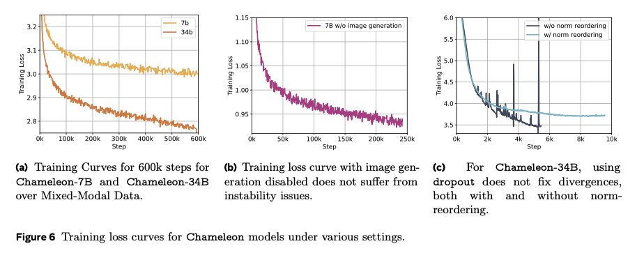

Here is the link to the original paper. These notes were prepared for my LLM Asia Paper Club sharing. Any feedback or areas for improvement would be most appreciated at cyzgab[at]gmail.com.
Key Points
End-to-end multimodal tokens (i.e. no modality-specific encoder or decoder)
Novelties in architectural innovations and training techniques to address computational challenges:
- query-key normalization
- revised placement of layer norms
Pre-training these models require large datasets and computation.
- Dataset of 4.4T (2.9T is text only, 1.5T is text-to-image, and 400B is text-and-image-interleaved)
- 7B and 34B trained on 856K and 4.2M GPU hours respectively
Performance:
- On Visual Q&A, outperforms Flamingo, Llava-1.5
- On text-only benchmarks, still competitive with Mixtral 8x7B and Gemini-Pro
- On human pairwise comparisons, beats Gemini-Pro and GPT-4V


Late vs Early Fusion
A useful reference for me was this literature review by Wadekar et.al
Late fusion Done at the internal layers of the model (e.g. OpenFlamingo, LLaMA-Adapter-V2)

Early fusion Done at the input stage (e.g. LLaVA, Unified-IO-2, Chameleon, Gemini)


Tokeniser
- For images: trained a new image tokenizer based on Gafni et.al (2022) which encodes a 512 × 512 image into 1024 discrete tokens from a codebook of size 8192
Based on OAI’s pricing page (as of 5 June 2024), one image is ~170 tokens in GPT-4o.
- For text: BPE tokenizer over a subset of training data, with a vocabulary size of 65K
Ensuring Stability of Pre-Training
“We found that the standard LLaMa architecture showed complex divergences due to slow norm growth in the mid-to-late stages of training. We narrowed down the cause of the divergence to the softmax operation being problematic when training with multiple modalities of significantly varying entropy due to the translation invariant property of softmax (i.e., softmax(z) = softmax(z+c)). Because we share all weights of the model across modalities, each modality will try to “compete” with the other by increasing its norms slightly; while not problematic at the beginning of training, it manifests in divergences once we get outside the effective representation range of bf16… In a unimodal setting, this problem has also been named the logit drift problem.” (Page 6)
Query-key normalisation: applying layer norm to the query and key vectors within the attention.
Revised placement of layer norms for 34B model
Introducing z-loss regularisation

Dropout was initially introduced after the attention and feed forward layer for the 7B model, though subsequently found to be not necessary. For the 34B model, dropout was not sufficient (nor necessary).
Summary of Pre-Training
| Model | Params | Context Length | GQA | Tokens | LR | Epochs | Dropout | Zloss | Qknorm |
|---|---|---|---|---|---|---|---|---|---|
| LLMa-1 | 7B | 2k | ✗ | 1.0T | 3.0 × 10^-4 | 1.0 | 0.0 | 0.0 | ✗ |
| 33B | 2k | ✗ | 1.4T | 1.5 × 10^-4 | 1.0 | 0.0 | 0.0 | ✗ | |
| LLMa-2 | 7B | 4k | ✗ | 2.0T | 3.0 × 10^-4 | 1.0 | 0.0 | 0.0 | ✗ |
| 34B | 4k | ✓ | 2.0T | 1.5 × 10^-4 | 1.0 | 0.0 | 0.0 | ✗ | |
| Chameleon | 7B | 4k | ✗ | 4.4T | 1.0 × 10^-4 | 2.1 | 0.1 | 10^-5 | ✓ |
| 34B | 4k | ✓ | 4.4T | 1.0 × 10^-4 | 2.1 | 0.0 | 10^-5 | ✓ |
Taken from Table 1 of the paper
Challenges Associated with Inference
- When decoding, we need to check whether it is a text or image token
- Masking tokens from other modalities when exclusively generating for a particular modality (e.g. no text tokens when doing image-only generation)
- Token-based image generation is a fixed-sized block
SFT/Alignment
Supervised fine-tuning dataset covered the following categories:
- text
- code
- visual chat
- image generation
- interleaved text/image generation
- safety (e.g. “I can’t help with that”)